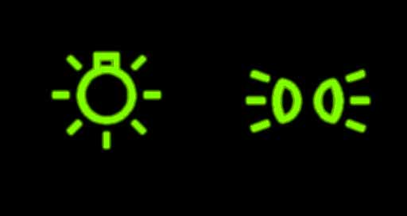
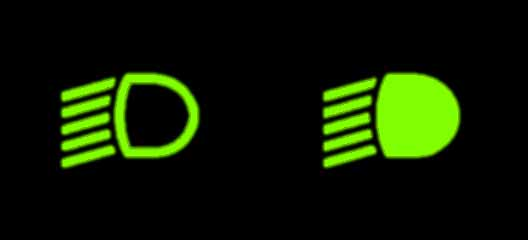
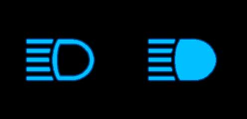
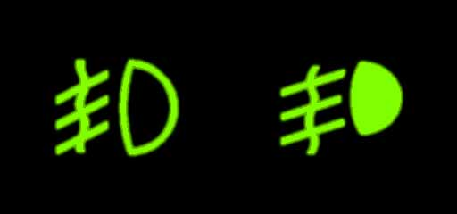

الهدف من هذا الباب هو تمكينك من معرفة الأضواء القانونية التي يجب أن تجهز بها العربات وكيفية استعمالها حسب المكان والظروف.
يجب على كل سائق في الليل وكلما اقتضت ظروف الرؤية نهارا أن يستعمل الأضواء المتعلقة بتجهيز وتهيئة العربات.
أضواء الوضعية

عددها اثنان من الأمام ذات لون أبيض واثنان من الخلف ذات لون أحمر : تمكن من رؤية العربة عندما يكون الطقس صاف على مسافة 150 متر .
تستعمل هذه الأضواء في الحالات التالية :
-عند التوقف والوقوف ليلا خارج مواطن العمران
-عند التوقف والوقوف ليلا داخل مواطن العمران في صورة عدم وجود إنارة عمومية .
أضواء المقاطعة

عددها اثنان فقط ذات لون أبيض : يرسلان إلى الأمام عند تشغيلها نورا أبيض يضيء على مسافة 30 متر .
تستعمل هذه الأضواء في الحالات التالية :
-في بداية الليل بصفة عامة يجب استعمال أضواء التقاطع وذلك عندما تكون الرؤية محدودة
-عند التلاقي إذا كان استعمال ضوء الطريق يبهر السائق القادم من الاتجاه المعاكس
-عند السير وراء عربة أخرى إذا كان استعمال ضوء الطريق يبهر سائق هذه الأخيرة إلا أثناء المجاوزة
-إذا كانت إنارة الطريق مسترسلة وتسمح بالرؤية على مسافة كافية
-في الطرقات الجبلية الضيقة و التي بها عدة منعرجات متتالية .
أضواء الطريق

عددها اثنان : ترسلان إلى الأمام عند تشغيلها نورا أبيض يضيء الطريق بصفة ناجعة ليلا عندما يكون الطقس صاف على مسافة 100 متر على الأقل.
تستعمل هذه الأضواء في الحالات التالية :
-عند الجولان ليلا في طريق غير مضاءة ( يجب الانتقال إلى أضواء التقاطع عند مقاطعة سائق عربة أخرى حتى لا يتعرض للإبهار )
-ليلا أثناء المجاوزة على مستوى العربة التي أقوم بمجاوزتها.
أضواء الضباب

عددها اثنان : ترسلان إلى الأمام عند تشغيلها نورا أبيض أو أصفر .
إذا كانت السيارة مجهزة بهذه الأضواء, فلا يمكن استعمالها إلا عند تقلص الرؤية بسبب : الضباب ،سقوط الثلوج، أمطار غزيرة